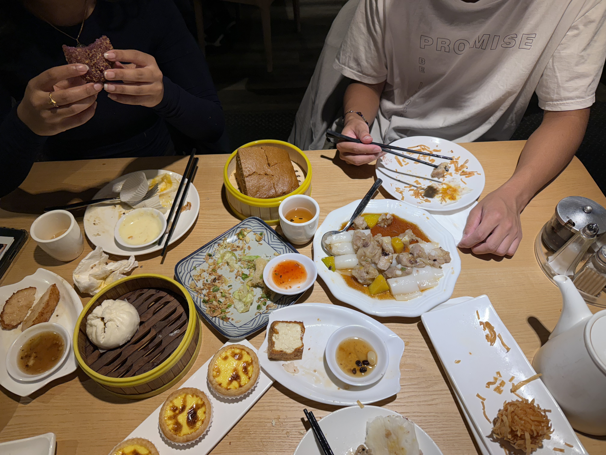
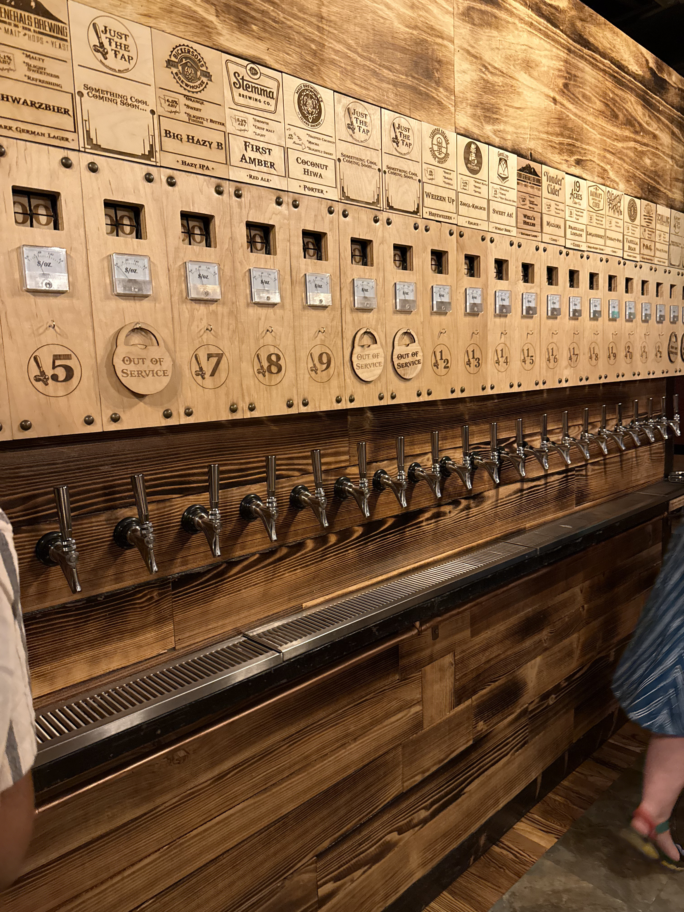

Home
|
Sights
|
Food
|
Culture
|
Tips
Food
Seattle Food Picture!!!
Bellevue hotpot for late nights with friends.

Chinatown-International District dim sum staples.

That spot with 17 rotating taps — flights recommended.
Favorites this summer
Spicy broth hotpot (ask for a mild split if needed)
Har gow, shumai, and egg tarts
Local IPAs and sours flight